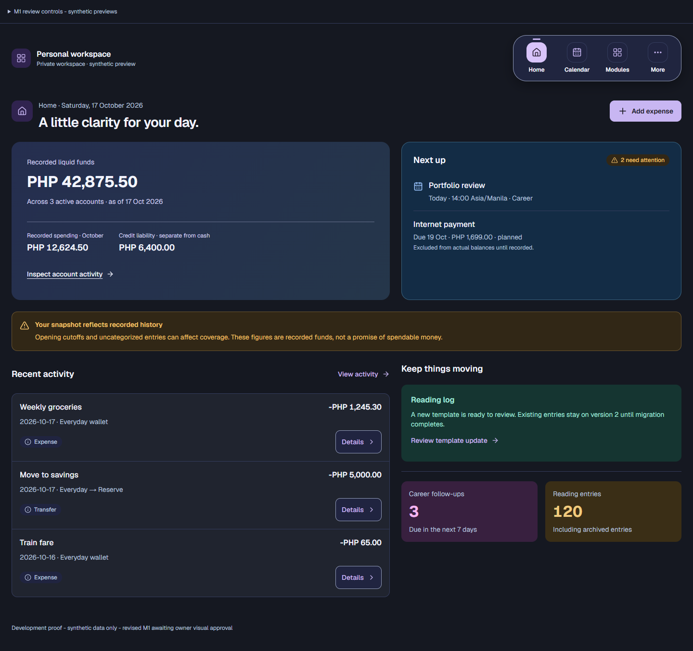

Evidence index and reproduction
M1 - Round 3 visual review
Owner approval pending. Recommend Porcelain + Midnight spectrum + Magic UI Dock (A). Every image is an actual synthetic application render. Open an image for full resolution; use the live development controls to operate either concept.
White-based light compositions
Controlled dark compositions
Midnight spectrum - recommended Graphite blue - quieter alternative
Graphite blue - quieter alternative
Desktop navigation - light
Touch navigation - light - 390px
Desktop navigation - dark
Touch navigation - dark - 390px
Module switching
Separate mobile expense task
Browsing now uses document scroll and reserved dock/focus clearance. Only expense tasks keep a bounded body. The Next indicator is disabled for manual review; application overlap checks remain independent. Real IME/device and manual assistive-technology checks remain pending.